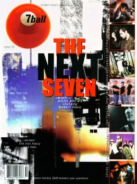

CMnexus
:
Contemporary Christian culture, music, and media.
Browse Magazines
Browse Profiles
cmnexus.org
CM
nexus
→
Profiles
→
F
→
Margaret Feinberg
Margaret Feinberg
Writing Credits: 1 of 2
< -- Previous
Next -- >
1
2
Writing credits listing
Feb 1997 in
Charisma
22.7
Ron Kenoly
-
Welcome Home
Dec 1997 in
Charisma
23.5
Vicki Yohe
-
He Knows My Heart
Jun 1998 in
Charisma
23.11
Spotlight:
Kevin Prosch
Jul 1998 in
7ball
#19
Delirious?
-
King of Fools
Aug 1998 in
CBA Marketplace
31.8
"Is There Life In The Lyrics?"
Steve Camp
,
John W. Styll
Dec 1998 in
Charisma
24.5
Michael W. Smith
-
Christmastime
Jan 1999 in
Charisma
24.6
Spotlight:
Vicki Yohe
Mar 1999 in
7ball
#23
Bankshots:
Mukala
Mar 1999 in
Charisma
24.8
Spotlight:
Darlene Zschech
Apr 1999 in
Charisma
24.9
Spotlight:
Chasing Furies
May 1999 in
Charisma
24.10
Dennis Jernigan
-
This Is My Destiny
May 1999 in
7ball
#24
"Breaking The Mold"
Chasing Furies
Jun 1999 in
Profile
#6
"No Kidding"
Kid's music & media -
Betsy Hernandez
,
Veggietales
Oct 1999 in
Charisma
25.3
Sight & Sound:
Lindell Cooley
Oct 1999 in
Profile
#8
various artists -
The Smithton Outpouring: Revival from the Heartland
Apr 2000 in
Profile
#11
various artists -
Beyond Sight

May 2000 in
7ball
#30
"Best of the New: 7 new artists that are changing the face of Christian music"
Philmore
,
Earthsuit
,
Ill Harmonics
,
Spark
,
Dicky Ochoa
,
MG! The Visionary
,
Chris Taylor
May 2000 in
Charisma
25.10
Vineyard Winds
-
Winds of Worship 15
Aug 2000 in
Charisma
26.1
Paul Terracini
-
As Incense: Symphonic Expressions of Faith
Sep 2000 in
7ball
#32
Philmore
-
Philmore
Sep 2000 in
Charisma
26.2
Lincoln Brewster
-
Live To Worship
Oct 2000 in
Charisma
26.3
Matt Redman
-
The Father's Song
Craig Smith
-
Your Kingdom Come
Nov 2000 in
Charisma
26.4
Spotlight:
Rita Springer
Dec 2000 in
Charisma
26.5
Bill Miller
-
Hear Our Prayer
Jan 2001 in
Charisma
26.6
Rita Springer
-
All I Have
4Him
-
Hymns: A Place Of Worship
Feb 2001 in
Profile
#16
various artists -
All The Riches of You
Mar 2001 in
Charisma
26.8
Michael W. Smith
-
Freedom
Apr 2001 in
Charisma
26.9
Ten Shekel Shirt
-
Much
Oct 2001 in
Charisma
27.3
MercyMe
-
Almost There
Nov 2001 in
Charisma
27.4
various artists -
No Greater Love
Dec 2001 in
Charisma
27.5
NewSong
-
The Christmas Shoes
Mar 2002 in
Charisma
27.8
Delirious?
-
Deeper: The d:finitive Worship Experience
Parachute Band
-
Amazing
Martha Munizzi
-
Say the Name
Jun 2002 in
Charisma
27.11
The Newsboys
-
Thrive
Jul 2002 in
CBA Marketplace
35.7
Shane & Shane
-
Psalms
Jul 2002 in
Charisma
27.12
Margaret Becker
,
Márie Brennan
,
Joanne Hogg
-
In Christ Alone: New Hymns of Prayer & Worship
Aug 2002 in
Charisma
28.1
Joel Chernoff
-
Come Dance With Me
Sep 2002 in
CBA Marketplace
35.9
Jody McBrayer
-
This Is Who I Am
Sep 2002 in
Charisma
28.2
Jeff Deyo
-
Saturate
Vicki Yohe
-
Beyond This Song
Oct 2002 in
Charisma
28.3
Point of Grace
and friends -
Girls of Grace
Nov 2002 in
Charisma
28.4
Sara Groves
-
All Right Here
Jan 2003 in
Charisma
28.6
"Scum of the Earth Outreach Touches Church Outcasts In Denver"
Five Iron Frenzy
Mar 2003 in
Charisma
28.8
Delirious?
-
Touch
Apr 2003 in
Charisma
28.9
Sixpence None the Richer
-
Divine Discontent
May 2003 in
New Man
10.3
"The World According to Bebo Norman"
Bebo Norman
Jun 2003 in
Charisma
28.11
Shane & Shane
-
Carry Away
Writing Credits: 1 of 2
< -- Previous
Next -- >
1
2
CMnexus
(noun)
The magazine index
of modern music
and Christianity
© 2011 CMnexus. Last updated September 2019.
Contact:
Rants and other correspondence to:
editor -AT- cmnexus
-DØT- org
About